Tutorial 2 - Labels¶
In this tutorial you will learn to:
chagne label geometry
change label alignment
change label margins
copy widhets in a window
use labels to add images
change label font colour
change label back-ground colour
change label boarders
Label widgets are Qt’s the most commonly used display widget. The majority of your UI will be made up of labels. In this tutorial you will learn how to change some of the basic label properties.
Qt Documentation
For additional information about labels, check the official QLabel documentaion from Qt.
Create new window¶
Using your knowledge from the last tutorial:
Create a new MainWindow
Remove the menu bar
Change the windowTitle to Tutorial 2
First label¶
We need to add a new label.
Scroll down the Widget library until you find Label
Click and drag a Label to the centre of the window canvas
Double Click on the label and change the text to Hello World
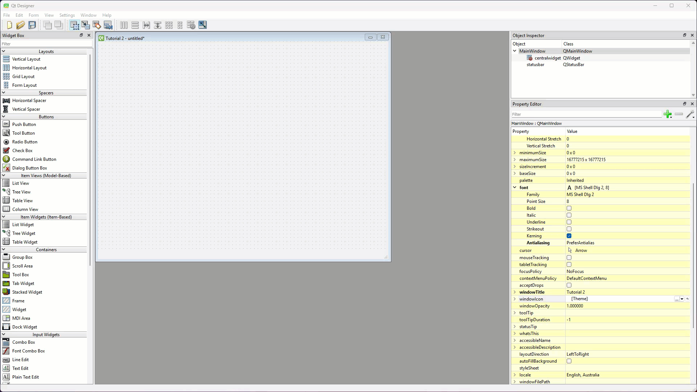
Now we need to adjust the geometry and font size.
Click on the label to select it, then in the Properties editor locate the label’s geometry
Change the width to 260 and the height to 120
Change the font Point Size to 20
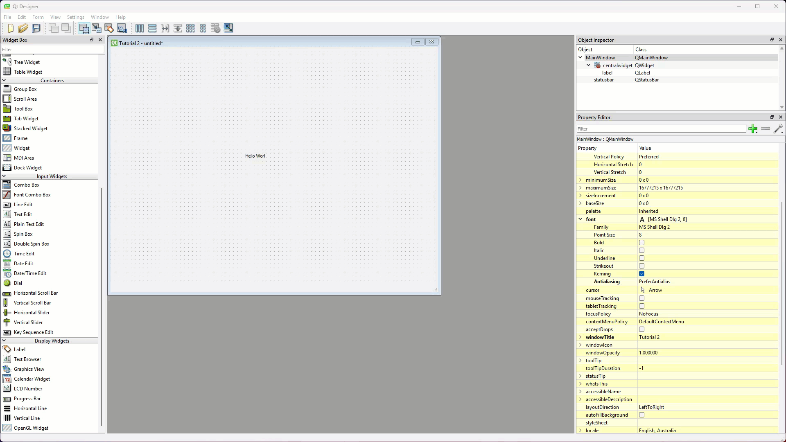
Next we will change the alignment of the text inside the label.
Scroll down further in the Properties editor until you find the QLabel section.
Locate the alignment section and click the > beside it, which should reveal the Horizontal and Vertical properties.
Click on the Vertical options and choose AlignTop
Change the Margin to 20
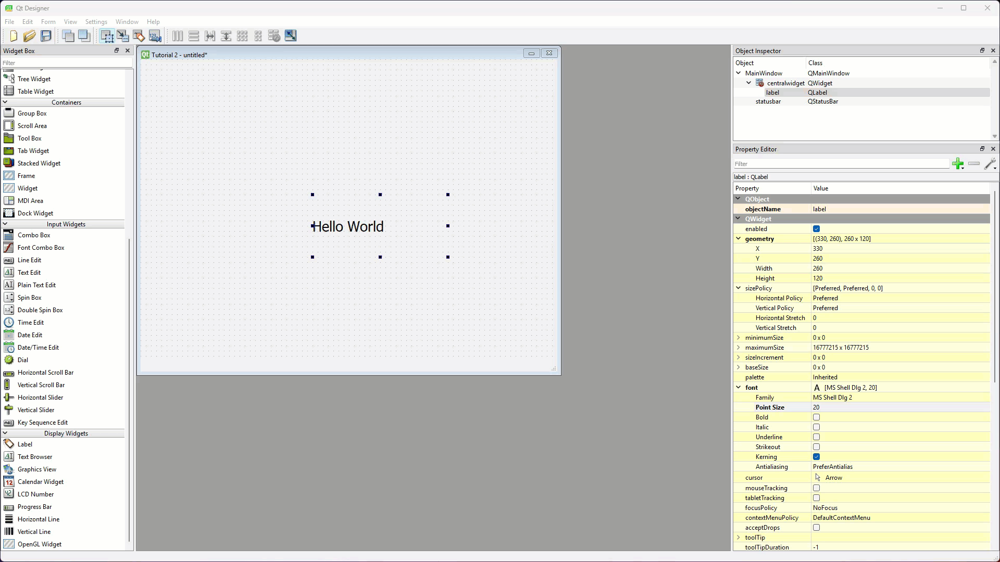
Finally we will format the label using its style sheet.
Scroll back up to the QWidget sections and find styleSheet
Click on the ellipses (…) on the righthand side
Type background-color: red; to change the label background colour to red
Type color: yellow to change the font colour to yellow
Type border: 2px solid black; to put a black border around the label
Check that the style sheet is valid then click OK
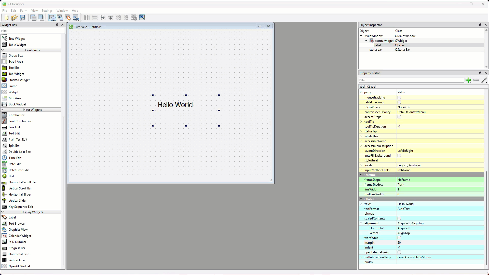
Style Sheets
Style sheets in Qt are a power mechanism that allows you to change the appearance of individual widgets, or the entire application. We will be using style sheets in later tutiorials, but you can explore Qt Style Sheets using their documenation.
Second label¶
To make the second label, we will simply copy the first one.
Copy the first widget by holding the Ctrl / Cmd key whilst clicking and dragging the first widget.
Double Click on the label and change the text to It is me
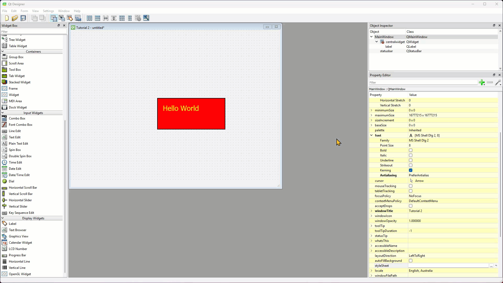
We will change the alignment of the second label.
Locate the alignment section and click the > beside it, which should reveal the Horizontal and Vertical properties.
Click on the Horizontal options and choose AlignHCenter
Click on the Vertical options and choose AlignVCenter
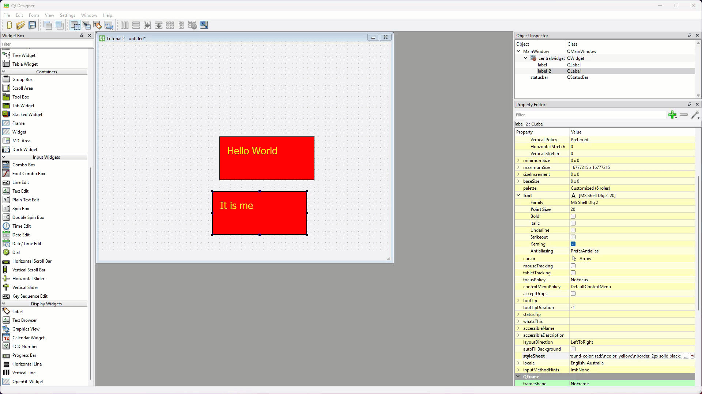
We will also change the style of label 2 so it differs from label 1.
Open its style sheet
Delete color: yellow
Delete border: 2px solid black;
Change to background-color: cyan;
Check that the style sheet is valid then click OK
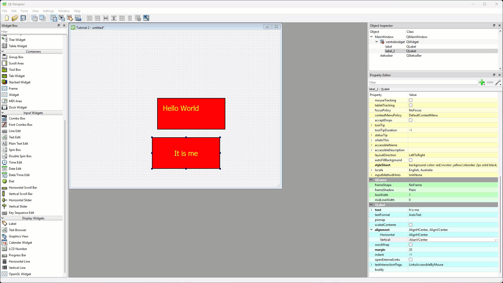
Third label¶
Label can contain more than text, they can also contain images. For the third label you will need to use the image below. Right-click on it and save it to you repo.

Add a new label to the window canvas above the other labels.
Scroll down the Widget library until you find Label
Click and drag a Label to the centre of the window canvas
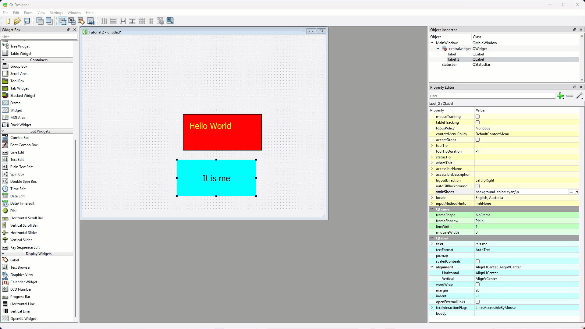
Now to add the image.
Scroll down the Properties editor until you find the QLabel section
Find pixmap and click on the empty space to the right of it
Click on dropdown arrow that appears and then click Choose File…
Navigate to, and select the mr-coder.png image you just saved (note, your location will be different to the location shown in the gif)
Then tick the checkbox beside scaledContent
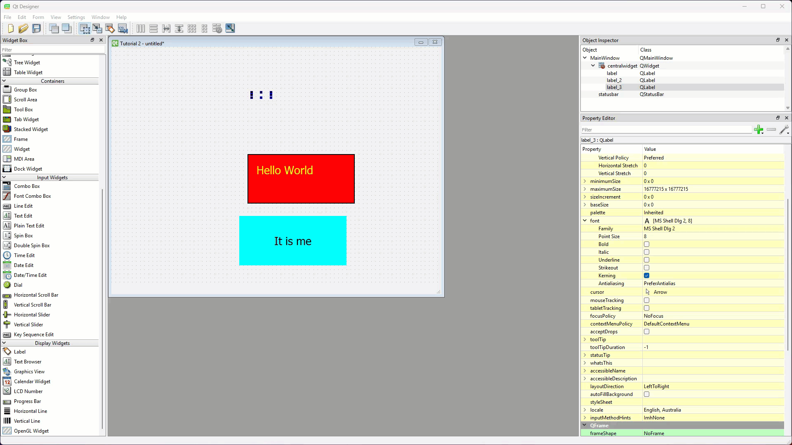
We need to change the label geometry so we can see the image.
Scroll back up to the QWidget section and adjust the label’s geometry.
width to 250
height to 70
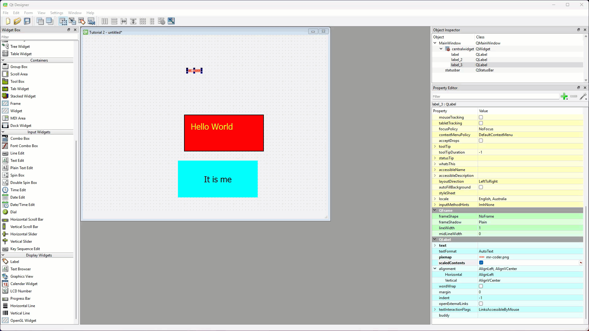
Create Python UI file¶
Save the UI file¶
Time to save the UI. It is important to save the UI file in the same directory (folder) as your main_window.py, ie. your repo for these tutorials.
Select Save from the File menu
Navigate to your repo with your main_window.py file
Name the file tutorial_02.ui
Convert UI file¶
Now we need to convert the UI file to a Python file, and we will do this in VS Code.
Open VS Code via GitHub Desktop
Check that the tutorial_02.ui file is in your file panel.
Open a new terminal
At the prompt, type
pyuic6 -o ui_main_window.py -x tutorial_02.uiThen press enter.
Time to run the app and check that it all works
Open the main_window.py
Run the code.
A window similar to the one below should appear.
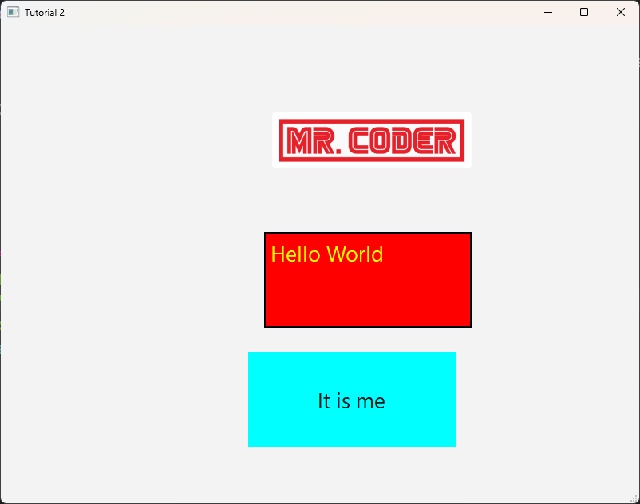
Conclusion¶
In this tutorial we covered changing some to the basic functions of the QLabel widget. There are many, many more properties, but these should be sufficient to create most UIs. If you want to explore more options check out the Qt documentation.